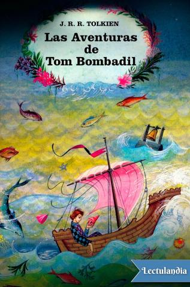

La obra, que contiene un total de 16 poemas, se presenta como una traducción del Libro Rojo de la Frontera del Oeste, escrito por Bilbo y Frodo Bolsón.
Contiene información sobre la Tierra Media que no se encuentra en ninguna otra obra de Tolkien, como por ejemplo los nombres de los siete ríos de Gondor.
Fuente: Wikipedia